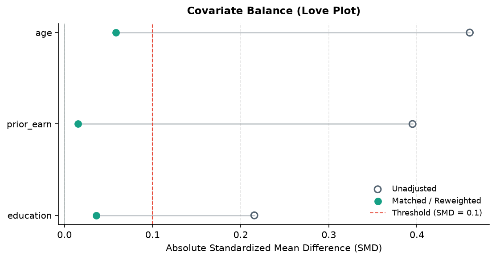

Observational ATT, Matching & OVB Sensitivity
Cross-fitted & stabilized AIPWATT, normalized IPWATT, k-NN PropensityScoreMatching with Abadie–Imbens SE, Love plots, and Cinelli–Hazlett OVB sensitivity.
AIPW ATT (True = 2.40)
+2.268
SE = 0.106 (5-fold stabilized)
PSM + Abadie–Imbens
+2.195
AI SE = 0.290 (k=3, caliper=0.15)
OVB Robustness RV_q
57.2%
RV_(q,0.05) = 53.9%
Max Post-Weight |SMD|
0.058
Down from 0.460
1. AIPW, IPW & Nearest-Neighbor Matching
Quasi separates doubly robust AIPWATT (supporting both stacked M-estimation and K-fold cross-fitting with pluggable scikit-learn learners), Hájek-normalized IPWATT, and deterministic nearest-neighbor PropensityScoreMatching. Because ordinary bootstrapping is invalid for nearest-neighbor matching, primary PSM SE is intentionally None and exact Abadie & Imbens (2006) Theorem 7 conditional variance is available via .abadie_imbens_se().
Observational ATT + Abadie-Imbens SE + OVB Sensitivity
import quasi
covs = ("age", "prior_earn", "education")
# 1. Cross-fitted, Hajek-stabilized Doubly Robust ATT (AIPW)
aipw = quasi.estimate(
df_obs,
design=quasi.ObservationalDesign(
outcome="earnings", treatment="training", covariates=covs,
estimator="aipw", n_splits=5, fold_seed=42, stabilized=True,
),
)
# 2. Normalized odds-weighted IPW ATT
ipw = quasi.estimate(
df_obs,
design=quasi.ObservationalDesign(
outcome="earnings", treatment="training", covariates=covs, estimator="ipw",
),
)
# 3. Nearest-Neighbor PSM (point-only primary SE) + Abadie & Imbens (2006) Theorem 7 SE
psm = quasi.estimate(
df_obs,
design=quasi.ObservationalDesign(
outcome="earnings", treatment="training", covariates=covs,
estimator="psm", n_neighbors=3, caliper=0.15,
),
)
ai = psm.abadie_imbens_se(l_matches=2)
# 4. Cinelli & Hazlett (2020) Omitted-Variable Bias Sensitivity (Robustness Values)
ovb = aipw.ovb_sensitivity(q=1.0, alpha=0.05)AIPW (5-fold, stabilized): ATT = +2.2684, SE = 0.1063, 95% CI = [+2.0601, +2.4766]
IPW (Hajek odds) : ATT = +2.2282, SE = 0.1274, 95% CI = [+1.9786, +2.4779]
PSM (k=3, caliper=0.15) : ATT = +2.1955, Abadie-Imbens SE = 0.2899, 95% CI = [+1.6272, +2.7638]
Cinelli-Hazlett OVB : RV_q = 0.5723 (confounder must explain >=57.2% of residual Y & D variance to zero out ATT);
RV_(q,alpha) = 0.5393 (to lose significance at alpha=0.05)
Figure 5. Standardized Mean Differences (|SMD|) before and after propensity reweighting, generated via
aipw.plot().2. Balance Diagnostics & OVB Sensitivity
| Covariate | Unadjusted |SMD| | Weighted |SMD| (AIPW) | Matched |SMD| (PSM) |
|---|---|---|---|
| age | 0.4600 | 0.0581 | 0.0145 |
| prior_earn | 0.3950 | 0.0155 | 0.0358 |
| education | 0.2155 | 0.0364 | 0.0600 |
Balance & Overlap Are Necessary, Not Sufficient
Achieving |SMD| < 0.10 checks balance on observed covariates only. Combine balance diagnostics with
.ovb_sensitivity() (Cinelli & Hazlett 2020) to quantify how strong an unobserved confounder would have to be to overturn your conclusions.